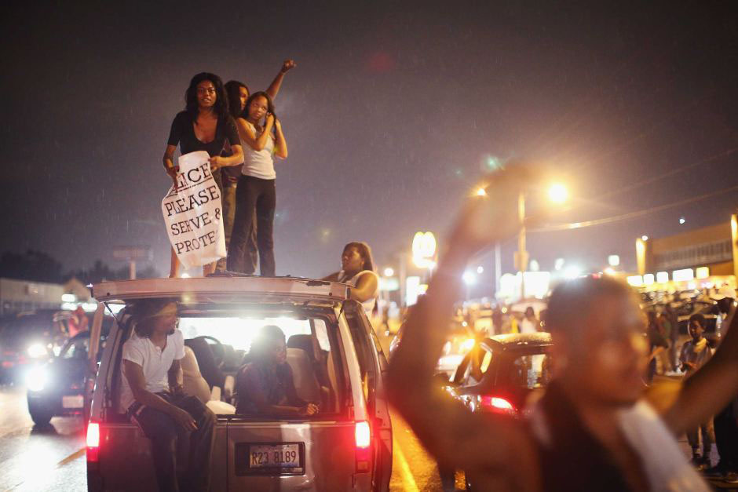

"the reason why the media MUST tell this story truthfully. #MikeBrown #Ferguson #stl”- Twitter: August 10, 2014
On August 9, 2014, an 18-year-old black man by the name of Michael Brown was shot and killed by Darren Wilson, a white police officer, in the St. Louis suburb of Ferguson. That one shooting would spark months of protests and unrest in Ferguson that would plaster the headlines of news media worldwide. The Ferguson protests would bring into the national conversation intense debates over police brutality, racial inequality, justice reform and many other issues.
What our research has done is to provide an insightful, local and interdisciplinary analysis of the Ferguson activist movement. We explored the relationship between media, education and geography of the St. Louis area and how that has shaped the community activism we saw in Ferguson. While much researchhas been done about the political significance of the Michael Brown case, what we have focused on is the role of organizing and media activism in the aftermath of Michael Brown’s death.
Two main parts consist of this research: the media and social geography. In turn, we researched how these two parts come together to educate and inform the citizens of Ferguson into organizing themselves. Thus, this research will shed light onto local community activists and the local activism going on often left by news media in the background. Additionally, this research aims to combat the stereotype of communities of color being ill-resourced and unstable and show how these communities have the capability to organize and transform their environment. Essentially, this research goes beyond the singular national focus on policing that happened during the Ferguson protests and offers a broader picture of St. Louis’ racialized and classed dynamics through a local lens.

St. Louis is one of the most segregated cities in the United States, and in St. Louis, it is no better exemplified than through the Delmar Divide. North of St. Louis's Delmar Boulevard is 95% black. South of it is two-thirds white (Cooperman).And not surprisingly, the northern part fares off worse economically and socially. None of this is coincidental; it is a result of a deliberate effort by racist institutions that it has turned out this way.
In 1900, St. Louis had more than 35,000 African-American residents, second only to Baltimore (Cooperman). Many white workers feared that they were taking away jobs, or that lower-paid workers would decrease the value of houses. Because of this economic tension, racist policies developed.
One of the first attempts was that St. Louis passed a reform ordinance, prohibiting anyone from buying a home in a neighborhood that was occupied by 75% of another race. SCOTUS striked this ordinance down, but racial covenants, which asked every family to sign a document agreeing to not sell their property to a black person, were still legal until 1948. Nevertheless, all this had effects in maintaining segregation in St. Louis.
Another method the government used to maintain segregation was eminent domain. In building highways and infrastructure, the government would purposely build it through African-American communities, essentially destroying them. The displaced residents were sometimes then given vouchers to live in public housing, such as the infamous Pruitt-Igoe, which basically moved entire populations of African-Americans. Some places were declared "slums" and therefore dangerous, and the governent destroyed those places.
There was segregation, but there was also different treatment of the the black and white communities that were segregated. The government played a role in criminalizing the black parts of St. Louis. Local zoning policies allocated areas, which tended to be more populated by African-Americans, as "slums" or "ghettos" and thus needed more policing and "nuisance codes."
All these factors led to the segregation and socioeconomic divide one sees in St. Louis over time and history.
Map of Counties by DPI

A map displaying the income inequality of each county in St. Louis.
Map of Counties by Race
.jpg)
A map displaying the racial demographics of each county in St. Louis.
“They won't hear your outrage talk, your protest megaphones, your rallying cries...they will only hear the sound of your money. #mikebrown #ferguson" - Twitter: August 11, 2014
Physical Resistance Travels to the Digital Space
The Ferguson Movement did not only physically resist the carceral space of St. Louis City and County, it also moved into the digital space of social media. Arendt’s (1958) conceptualization of the polis as the “organization of the people as it arises out of acting and speaking together” provides a framework for analyzing the construction of physical and digital space (p. 199). Space, then, “constitutes and structures relationships and networks” and positions “social and cultural life” (Martin & Miller, 2003, p. 144-145). How space produces and is produced by media infrastructures has become a central question in scholarship integrating social geography with media studies. The notion that spatiality is “constituted through… but also shapes social action” is extended to technologies that also shape spatiality (Leitner, Sheppard, Sziarto, 2008). In other words, analyses of spatiality, social movements and media have examined the ways “space is produced” through local and digital spatial contexts (Barnett, 2004, p. 59). More specifically, the spatial politics of media images, production and consumption, or what Couldry (2004) calls “MediaSpace,” present a dialectical relationship that entails the “kinds of spaces created by media, and the effects that existing spatial arrangements have on media forms as they materialize in everyday life” (p. 1).
As digital media have provided individuals new opportunities for inexpensive ways to network, mobilize and distribute content, the emergence of online activism and social movement media has raised intellectual questions about the role of alternative or “subaltern counterpublic” online spheres (Fraser, 1990; Lim, 2014; Downey & Fenton, 2003). Within scholarly conversations regarding digital media and their functions in society, scholars’ positions can be categorized within two primary arguments. The “pipeline” framework perceives new media as another ‘factory’ for the production and distribution of cultural products, while the “frontier” argument views it as participatory (Lievrouw, 2012). Social movements that began to employ the Internet during the 1990s, such as the well-documented anti-NAFTA struggle of the Zapatistas, illustrated the role digital media could play in rapidly mobilizing across space (Downing, 2001). According to Lim (2014), digital media spaces and networks can be used to propagate new narratives, new messages, new ideas that challenge the authority” (p. 62). Political economic analyses, on the other hand, have employed critical approaches to analyzing new media, demonstrating linkages between digital media space and labor (Fuchs, 2014).
Some recent literature on activism and new media space suggest more complicated readings that highlight the intricate ways digital media and physical space intersect (Aouragh, 2012). Linking the online and offline, therefore, is key to providing insight into how the “digital and physical enmesh to form an ‘augmented reality’” (Jurgenson, 2012, p. 83) or an “amplified public sphere” (Nanabhay & Farmanfarmaian, 2011). Much of the literature that examines what the West calls “Arab Spring” has complicated conventional optimistic arguments that have named recent movements after the technological spaces of which activists employ. Thus, naming “Arab Spring” a ‘Twitter Revolution’ “fails to account for how technology and society, the digital and the physical, media and humans, have imploded and augmented each other” (Jurgenson, 2012, p. 84). In this “augmented reality,” the digital and physical have been “enmeshed,” a “blurring of the on and offline” (p. 85). As Lim (2014) suggests, social movements depend not only on digital media but must move beyond digital media spaces. If specific locations themselves are not occupied, then the change activists seek would not occur (Nanabhay & Farmanfarmaian, 2011). Place then remains important for people, as it also refers to the “experience of a particular location with some measure of groundedness … sense of
boundaries, and connection to everyday life, even if its identity is constructed, traversed by power, and never fixed” (Escobar, 2001, p. 140)
Analyzing the blurring of digital with local space, therefore, provides insight into the ways social movements maneuver both “digital and physical urban public spaces … controlling when and where it appears and disappears” (p. 62). In a visual analysis of Black Lives Matter protests, Mirzoeff (2017) underscores the significance of the movement’s visual power, contending that photographs and videos taken by activists reveal three “streams of visibility” (p. 17). These included witnessing state violence, the visualizing of injustice and the sharing of these images. But in visualizing and communicating the movement, activists also demonstrated the importance of place, sites that have a “distinct materiality, a material environment that is historically constructed – networks of roads and railroads, the layout and design of residences, offices, factories, public parks and recreation areas, fences, walls, etc.” (Leitner, Sheppard & Sziarto, 2008, p. 161). This study, thus, demonstrates the significance of the “materiality of space,” specifically the historical geographical context of St. Louis, and how it intersected with and diverged from media space (p. 161)
Photo Gallery

Caption

Caption

Caption

Caption

Caption
❮
❯
Community Interaction
The photos in the slideshow gallery highlight the collaboration between the community of Ferguson and St. Louis after the shooting of Mike Brown. Many residents and community members protested in places such as county malls, supercenters, gas stations, and busy streets to make a statement about the shooting and the non-indictement of Darren Wilson.
Law enforcement and local St. Louis military forces set out to the streets of Ferguson and other places that were labeled as protest zones to disperse crowds and stop people from protesting. Some residents and community members have referred to law enforcement and military powers as disruptive to peaceful protesting and mistreating community members who were supporting the protest.
"Tomorrow at noon in Town and Country. We'll meet up at Whole Foods. Dress is business casual. #PrayForSTL #Ferguson" - Twitter: 2014
"As I thought! Media didn't cover PEACEFUL vigil but will focus on riots! @CNN #MichaelBrown #MikeBrown” - Twitter: August 11, 2014
Turning on the News
Couldry and Curran (2003) highlight one of two directions for analyzing media power, which entails examining media power as “an emergent form of social power in complex societies whose basic infrastructure depends increasingly on the fast circulation of information and images” (p. 4). In employing social media, activists employed Twitter as a space to challenge mainstream media power, even as the space itself acts as another form of corporatized media power. Still, in some ways access to social media during demonstrations provided an alternative form of media power. Some commented on the immediacy of social media, where users could easily report from what they called “ground zero.” Conflicts that seem to take on “other forms of power turns out … to be about relative control over society’s representational resources” (p. 4). Activists frequently noted the distorted depictions of Brown and Ferguson in mainstream media coverage. This struggle over representation—particularly in relation to mediated justifications of police brutality following the numerous murders of black Americans across the country—emerged in the immediate aftermath of Brown’s death. Moreover, some activists noted other forms of digital media were more powerful than social media sites like Twitter. Facebook, live streaming, and the involvement of the local artist community also were critical for challenging national media power. Engaging in multiple forms of local media power became critical for documenting “ground zero."
Following Brown’s murder, #IfTheyGunnedMeDown quickly became a global hashtag that attempted to provide a counter narrative of black men, challenging historical mainstream representations of black criminality. When searching for tweets related to discussions about “media” posted in the first three days after Brown’s murder, #IfTheyGunnedMeDown was listed as the third top hashtag. Similarly, local activists employed various local and mediated strategies for counteracting mainstream media accounts of the movement. Shane, for instance, saw social media as a “corrective tool.” In the immediate minutes after Michael Brown was murdered by Darren Wilson, a post appeared on Twitter: “Just witnessed a kid being shot by the corrupt Po Po... #Ferguson #Unarmed” (August 9, 2014). Other Twitter users geographically located in St. Louis focused on describing and naming Michael Brown as a graduate of Normandy High School. Arguably, a more localized description of Brown by local residents humanized Brown, counteracting what would soon become media narratives criminalizing Brown. As residents tweeted about Brown’s murder, many commented on the absence of Brown’s murder in media: “Why are media outlets not reporting the shooting of #MikeBrown? @ABC @CBSNews @fox5newsdc @FoxNews@cnnbrk @CNN @CNBC explain yourselfs?” (August 10, 2014).
Once media did arrive in Ferguson, however, activists not only read what they perceived as distorted news but also experienced the strategies some national organizations employed to sensationalize the movement. After working with several mainstream media organizations in August 2014, Carl (personal communication, March 12, 2017) recalled doing a live interviewing with CNN:
I was already miked up and … I got this … instant message … It said, ‘CNN breaking protestors attack police headquarters, tear gas, and bullets,’ or something to that effect. They say, ‘Okay, we're ready’… I hadn't even processed that yet … I just told them what happened. I said, ‘They were protesting and I was taking photos. They [police] rolled up and they just attacked.’ And they cut to the next guy and started talking to him … They kept asking me the same question and I was like, ‘This is exactly what happened.’ The other guy … got more personally sensational … showing his wound and stuff … I think they were trying to get to the story first … From that moment on, when I get calls, I just delete their number …
Carl’s description illustrates why so many activists sought to counteract mainstream representations of protesters. As is indicated here, he like many others believed the news merely sensationalized the actual events occurring within Ferguson’s physical spaces. The battle over representational resources between mainstream media and local activists took place in both the local and digitized spaces of St. Louis.
Activists noted that local headlines from the St. Louis Dispatch and other national media outlets perpetuated a historical pattern of connecting blackness to criminality. News headlines such as “Source: Darren Wilson says Michael Brown kept charging at him” and “Robbery report could have Ferguson officer more wary” were two of many that moved activists and social media users to challenge such representations. As one Twitter user indicated: “Of all the pictures I see of #MikeBrown on @YahooNews @CNNFoxNews any media outlet not one was of him had a smile thanks for being biased” (August 12, 2014). The criminalization of blackness also moved beyond Brown’s posthumous representation to Ferguson protestors. As news of “looting” spread across the country, some Twitter users questioned media’s focus on the violence of a few individuals rather than the actual murder of Brown: “as I thought! Media didn't cover PEACEFUL vigil but will focus on riots! ... @CNN #MichaelBrown #MikeBrown” (August 11, 2014). Thus, many saw social media as “the reason why the media MUST tell this story truthfully. #MikeBrown #Ferguson #stl” (August 10, 2014).
Gaining the Power to Tell the Story
Telling an inside story from the streets of Ferguson, thus, became an important marker of power for some activists. Also, highlighting the importance of seeing live events as they formulated on the ground, activists recalled the role live streaming played in documenting the movement. Live streamers allowed the country to witness online live, unaltered video footage of demonstrations and police officers’ violent interactions with activists for long periods of time. While Constance remained skeptical of social media, she believed live streaming allowed people to “bear witness to the violence of capitalism, of white supremacy, of patriarchy, and [see] the way that these stories [were] told by the people who were … impacted by it and living it.
” Self-identifying as a “revolutionary pot banger,” Maya (personal communication, July 6, 16) also saw the potential for live streaming to “dispute what mainstream media [was] trying to tell people.” Live streaming, perhaps more than any other medium, offered a “real” account of the movement: “If you take that time to watch this live stream, you gonna see this is happening. Nobody is gonna be able to tell you anything. Nobody’s gonna be able to tell you anything because you gonna see things as it is.” More than any other medium, activists perceived the emergence of live streaming in “providing the space for the construction of subjectivity on the part of political actors in the streets” (Thorburn, 2014: 52):
[Live streaming] helped in a way when it’s out of the purity of your heart. So … somebody out there just live streaming for your life, right? Sometimes you seeing on the live stream that the phone dropped because they were … cussing at the police. They might get locked up with the phone in their pocket … That’s different than somebody with a clear strategy
Interviews with local activists demonstrates the wide-range of media employed to create alternative mediated narratives. As evidenced by this data, Twitter, Facebook, live streaming, and the involvement of the local artist community were central to challenging national media power. But moving beyond social media, engaging in multiple forms of local media power became critical for establishing a counter-public sphere to resist state violence. Yet, activists also reflected on the manifestation of a movement that was largely defined by broader online publics. They sought to re-construct and re-position Brown’s death and the movement as an anti-neoliberal and anti-racist struggle. In the next section, we highlight how local activists’ nuanced approaches to organizing within a unique racialized and classed geographical context sometimes differed from the online politics of #Ferguson.
While St. Louis-based activists acknowledged the importance of counteracting mainstream mediated narratives, they simultaneously understood national media (in both traditional and digital forms) as a space where local voices disappeared. Thus, the movement as defined by local activists was as Malcolm puts it: “in the air.” In their spatial analysis of #Ferguson, Bonilla and Rosa (2015) ask “what do they [tweets] tell us about this event, its place in the social imagination, and about social media itself as a site of both political activism and social analysis?” (p. 5). While such a question is important to examine, we argue that an examination of social media data in isolation fails to capture what activists perceived as a hyperlocal movement unique to a particular geographic context (even while sharing similar struggles with other nation-wide incidents of police brutality). Our analysis reveals a complex relationship between Twitter discourse and activists’ framing of the movement as both an anti-neoliberal and anti-racist struggle. Critical analyses of western media systems have contended that traditional forms of mass media have always been incorporated into the logic of capitalism (Hallin, 2008).
"Tonight proves it. News has become just a ratings driven business. Not set up to cover the news anymore. @CNN @msnbc @FoxNews #Ferguson" - Twitter: 2014
"Stop calling what the Black folk are doing in #Ferguson a riot." - Twitter: 2014
Does This Story Have an Ending?
In describing the growing crowd of witnesses and protestors at the apartment complex Brown’s family lived in on August 9, 2014, one Twitter user reported from inside Ferguson: “…they chanting we gon.be.on.the news smh” (O’Malley, 2014). At this moment, people outside and inside of Ferguson received an instant glimpse into the weeks that would follow. While Twitter would continue to serve as a space to instantaneously communicate information about an emerging movement, it would not begin to capture the multi-layered dynamics that consumed activists daily. Specifically, social media spaces serve as potential locations of resistance, particularly for challenging mainstream media’s representations. Yet, these sites also posed a problem for activists in publically locating and naming themselves “within a system of relations” (Carroll and Hackett, 2006, p. 93). While many public conversations defined the movement as primarily an anti-racist, socially mediated and organic movement, interviews with local activists revealed a markedly different narrative. Local activists were themselves aware that while “plurality may impede the formation of a distinct collective identity,” it also “contributes to a synergistic development between identity formation and community building” (p. 94). Yet, this particular narrative of the movement disappeared within the fray of national narratives.
Scholarship on social media and social movements have demonstrated how “networked publics’ use of common platforms and hashtags to document, contextualize, and amplify cases of police violence against people of color, revealing an undeniable pattern explained only by structural racism” (Barnard, 2017, p. 5). This study’s analysis contends with the notion that social media platforms provided a space for individuals outside and inside of Ferguson to connect Brown’s death with other national incidents of police brutality. Yet, it also demonstrates that a focus on digital media patterns of social movements misses larger connections between police brutality, the importance of geographical localities and ongoing efforts to accumulate capital through the dispossession of people of color.
Thus, the pattern of police brutality is not only explained by structural racism. In-depth interviews with activists also demonstrated a movement that consciously defined itself as a working-class struggle. The local voices of those who did make these connections have not entered academic discourse. To bring in local activist voices, thus, complicates optimistic and technologically-deterministic arguments about the power of social media. As Fuchs (2012) suggests, “communication technologies do not cause riots, revolutions, or rebellions; but rather discontented people with make use of all means necessary and available” (p. 389).
An analysis of interviews with local activists, therefore, raises questions for scholars to consider if we are to give voice to the ongoing significance of social media power, social justice and the faces behind today’s struggles against the neoliberal order. Mansell (2004: 100) argues that “in the growing field of ‘internet studies’ there is little explicit treatment of power.” As many scholars have noted, faces exist behind the production of social media; yet, an emphasis on social media data without an analysis of the voices behind social movements raises more questions than it answers. The spatial movements of offline resistance, and their reflections and divergences from online spatial politics raise critical questions for media and social movement scholars. As such, the question of power and how it is “embedded in, and experienced through” is equally important (100).
To understand why some Ferguson activists perceived the Ferguson Movement as uniquely different from the larger Black Lives Matter network of organizations—even as #BlackLivesMatter reached prominence in the months following Brown’s death—requires more in-depth analyses. Such investigations, however, would require deeper insight into the nuanced strategies that local community activists employed inside Ferguson.
GO FURTHER
Bibliography
Bonilla Y. and Rosa, J. (2015). #Ferguson: Digital protest, hashtag ethnography, and the racial politics of social media in the United States. American Ethnologist 00(0): 4-16.
Carroll W.K. & Hackett, R.A. (2006). Democratic media activism through the lens of social movement theory. Media, Culture & Society 28(1): 83-104.
Couldry, N. (2003). Mediaspace: Place, scale and culture in a media age. New York: Routledge.
Couldry, N. & Curran J., eds. (2003) Contesting Media Power: Alternative Media in a Networked World. New York: Rowman & Littlefield Publishers, Inc.
Creswell, J.W. (2014). Research design: Qualitative, quantitative and mixed methods
approaches. Los Angeles, CA: Sage Publications.
Downey, J & Fenton, N. (2003). New media, counter publicity and the public sphere. New Media & Society 5(2): 185-202.
Downing, J.D.H. (2014). Social Movement Media in the Process of Constructive Social Change. In Wilkins KG, Tufte T and Obregon R (eds.), The Handbook of Development Communication and Social Change. Chichester, UK: John Wiley & Sons Ltd, DOI: 1002/9781118505328.
Fairclough, N. (2003). Analysing Discourse: Textual analysis for social research. New York: Routledge.
Fraser, N. (1990). Rethinking the public sphere: A contribution to the critique of actually existing democracy. Social Text 25/26: 56-80.
Fuchs, C. (2012). Behind the news: Social media, riots, and revolutions. Capital & Class 36(3): 383-391.
Fuchs, C. (2014). OccupyMedia!: The Occupy Movement and Social Media in Crisis Capitalism. UK: Zero Books.
Gross L. (2003). The Gay Global Village in Cyberspace. In Couldry N and Curran J (eds.), Contesting Media Power: Alternative Media in a Networked World. New York: Rowman & Littlefield Publishers, Inc, pp. 259-272.
Hallin, D.C. (2008). Neoliberalism, social movements and change in media systems in the late twentieth century. In Hesmondhalgh D and Toynbee J (eds), The Media and Social Theory. New York: Routledge, pp. 43-58.
Harvey, D. (2004). The ‘New’ Imperialism: Accumulation by Dispossession. Socialist Register 40: 63-87.